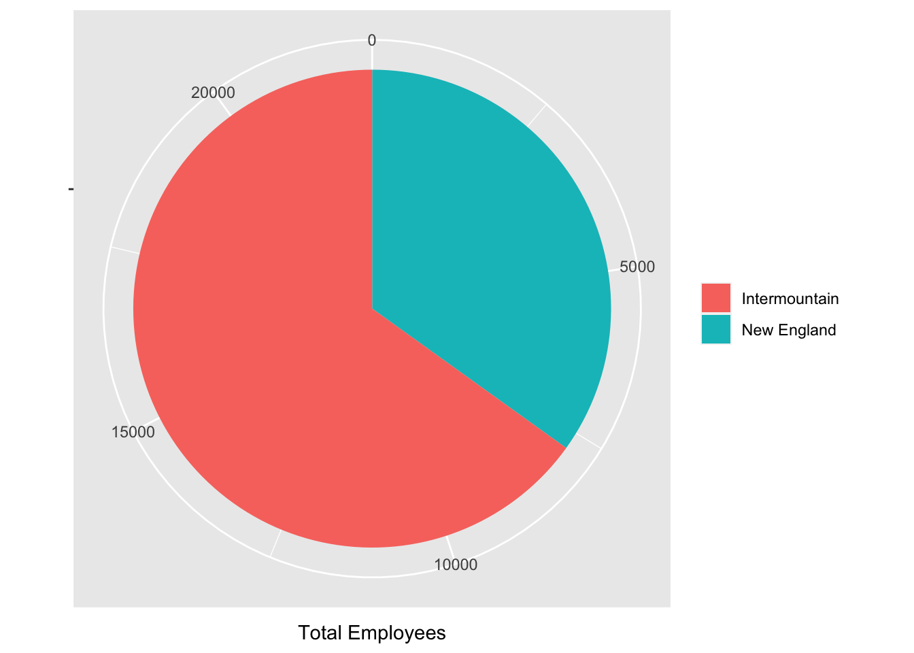

Code
library(tidyverse)
knitr::opts_chunk$set(echo = TRUE, warning=FALSE, message=FALSE)Dirichi Umunna
March 16, 2023
This blog post aims to provide a descriptive analysis of the “railroad” dataset, which contains information on railroad employees across different states in the United States. We start by importing the data and generating an overview description, as well as creating visualizations to explore the dataset further. The focus of our analysis is to compare the number of railroad workers in the New England area of the United States with those in the Intermountain West Region. New England comprises of six states, namely Maine, Vermont, New Hampshire, Massachusetts, Rhode Island, and Connecticut, while the Intermountain West Region comprises of five states, including Colorado, Montana, Wyoming, Utah, and Nevada. By comparing the number of employees between these regions, we can gain insight into potential differences and identify areas for further investigation.
Data Frame Summary
rrdata
Dimensions: 2930 x 3
Duplicates: 0
-----------------------------------------------------------------------------------------------------------------
No Variable Stats / Values Freqs (% of Valid) Graph Valid Missing
---- ----------------- -------------------------- --------------------- -------------------- ---------- ---------
1 state 1. TX 221 ( 7.5%) I 2930 0
[character] 2. GA 152 ( 5.2%) I (100.0%) (0.0%)
3. KY 119 ( 4.1%)
4. MO 115 ( 3.9%)
5. IL 103 ( 3.5%)
6. IA 99 ( 3.4%)
7. KS 95 ( 3.2%)
8. NC 94 ( 3.2%)
9. IN 92 ( 3.1%)
10. VA 92 ( 3.1%)
[ 43 others ] 1748 (59.7%) IIIIIIIIIII
2 county 1. WASHINGTON 31 ( 1.1%) 2930 0
[character] 2. JEFFERSON 26 ( 0.9%) (100.0%) (0.0%)
3. FRANKLIN 24 ( 0.8%)
4. LINCOLN 24 ( 0.8%)
5. JACKSON 22 ( 0.8%)
6. MADISON 19 ( 0.6%)
7. MONTGOMERY 18 ( 0.6%)
8. CLAY 17 ( 0.6%)
9. MARION 17 ( 0.6%)
10. MONROE 17 ( 0.6%)
[ 1699 others ] 2715 (92.7%) IIIIIIIIIIIIIIIIII
3 total_employees Mean (sd) : 87.2 (283.6) 404 distinct values : 2930 0
[integer] min < med < max: : (100.0%) (0.0%)
1 < 21 < 8207 :
IQR (CV) : 58 (3.3) :
:
----------------------------------------------------------------------------------------------------------------- state county total_employees
1 AE APO 2
2 AK ANCHORAGE 7
3 AK FAIRBANKS NORTH STAR 2
4 AK JUNEAU 3
5 AK MATANUSKA-SUSITNA 2
6 AK SITKA 1[1] "state" "county" "total_employees"Based on the provided information, it is clear that the dataset contains only three variables and a total of 2930 observations. The column labels suggest that the data pertains to railroad workers across various counties in the United States.
Min. 1st Qu. Median Mean 3rd Qu. Max.
1.00 7.00 21.00 87.18 65.00 8207.00 [1] 255432From the above exploration we can see that the employee total us 255432, with a mean of 87 and a median of 21
Here, we are trying to create new data frames that specifically isolates our regions of interest.
Min. 1st Qu. Median Mean 3rd Qu. Max.
2.0 9.0 44.0 119.4 113.0 1561.0 [1] 7764 Min. 1st Qu. Median Mean 3rd Qu. Max.
1.00 5.00 16.00 73.10 60.25 737.00 [1] 14474The new england area has a mean number of employees of 119, while the mean number of employees for the intermountain region is 73. This is against the national mean of 87.
Next we stack the employee information in a visualization bar plot to highligh these differences.
# create a data frame with total employees by region
region_data <- data.frame(
region = c("New England", "Intermountain"),
total_employees = c(sum(new_england_data$total_employee), sum(interm_data$total_employee))
)
# create a stacked bar plot
ggplot(region_data, aes(x = "", y = total_employees, fill = region)) +
geom_bar(stat = "identity") +
labs(x = NULL, y = "Total Employees", fill = NULL) +
coord_polar(theta = "y")
This study provides valuable insights into the railroad data for two distinct regions in the country, shedding light on the variations in the number of employees between these regions. While both regions have similar numbers of states, our analysis revealed that the Intermountain region has almost double the number of railroad employees compared to the New England region. These findings open up a pathway for further research to understand the underlying factors driving such regional disparities in the railroad industry. Possible explanations may include variations in economic conditions, industry regulations, or demographics. A deeper understanding of the reasons behind these differences can provide important insights for policymakers, industry leaders, and other stakeholders to make informed decisions about investment, resource allocation, and strategic planning for the railroad industry.
---
title: "Describing Railroad Dataset: New England vs the Intermountain West Region"
author: "Dirichi Umunna"
description: "Data wrangling: using group() and summarise()"
date: "03/16/2023"
format:
html:
toc: true
code-fold: true
code-copy: true
code-tools: true
categories:
- challenge_2
- railroads
- faostat
- hotel_bookings
---
```{r}
#| label: setup
#| warning: false
#| message: false
library(tidyverse)
knitr::opts_chunk$set(echo = TRUE, warning=FALSE, message=FALSE)
```
## Challenge Overview
This blog post aims to provide a descriptive analysis of the "railroad" dataset, which contains information on railroad employees across different states in the United States. We start by importing the data and generating an overview description, as well as creating visualizations to explore the dataset further. The focus of our analysis is to compare the number of railroad workers in the New England area of the United States with those in the Intermountain West Region. New England comprises of six states, namely Maine, Vermont, New Hampshire, Massachusetts, Rhode Island, and Connecticut, while the Intermountain West Region comprises of five states, including Colorado, Montana, Wyoming, Utah, and Nevada. By comparing the number of employees between these regions, we can gain insight into potential differences and identify areas for further investigation.
```{r}
#installing packages
library(tidyverse)
library(summarytools)
library(ggplot2)
#using the readr package
library(readr)
rrdata <- read.csv("/Users/dirichiumunna/Documents/DACS601/GITHUB/dacss601_spring2023/posts/_data/railroad_2012_clean_county.csv")
```
## Describing the Data
```{r}
dfSummary(rrdata)
head(rrdata)
colnames(rrdata)
```
Based on the provided information, it is clear that the dataset contains only three variables and a total of 2930 observations. The column labels suggest that the data pertains to railroad workers across various counties in the United States.
```{r}
#we start by getting the mean and median employees nationwide.
summary(rrdata$total_employees)
#Total number of employees
sum(rrdata$total_employee)
```
From the above exploration we can see that the employee total us 255432, with a mean of 87 and a median of 21
## Further Data Exploration
```{r}
# Create a vector of New England states
new_england_states <- c("ME", "NH", "VT", "MA", "RI", "CT")
#create dataframe
new_england_data <- rrdata %>%
filter(state %in% new_england_states)
```
```{r}
#create a vector for the intermountain states
interm_states <- c("MT", "WY", "UT", "CO", "NM", "NV")
#create dataframe
interm_data <- rrdata %>%
filter(state %in% interm_states)
```
Here, we are trying to create new data frames that specifically isolates our regions of interest.
```{r}
# Compute summary statistics for the two regions
summary(new_england_data$total_employees)
sum(new_england_data$total_employee)
summary(interm_data$total_employees)
sum(interm_data$total_employee)
```
The new england area has a mean number of employees of 119, while the mean number of employees for the intermountain region is 73. This is against the national mean of 87.
## Visualisation
Next we stack the employee information in a visualization bar plot to highligh these differences.
```{r}
# create a data frame with total employees by region
region_data <- data.frame(
region = c("New England", "Intermountain"),
total_employees = c(sum(new_england_data$total_employee), sum(interm_data$total_employee))
)
# create a stacked bar plot
ggplot(region_data, aes(x = "", y = total_employees, fill = region)) +
geom_bar(stat = "identity") +
labs(x = NULL, y = "Total Employees", fill = NULL) +
coord_polar(theta = "y")
```
## Conclusion
This study provides valuable insights into the railroad data for two distinct regions in the country, shedding light on the variations in the number of employees between these regions. While both regions have similar numbers of states, our analysis revealed that the Intermountain region has almost double the number of railroad employees compared to the New England region. These findings open up a pathway for further research to understand the underlying factors driving such regional disparities in the railroad industry. Possible explanations may include variations in economic conditions, industry regulations, or demographics. A deeper understanding of the reasons behind these differences can provide important insights for policymakers, industry leaders, and other stakeholders to make informed decisions about investment, resource allocation, and strategic planning for the railroad industry.